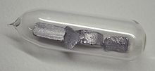

Thallium
|  | |||||||||||||||||||||||||||||||||||||||||||||||||||||||||||||||||||||||||||||||||||||||||||||||||||||||||||||||||||||||||||||||||||||||||||||||||||||||||||||||||||||||||||||||||||||||||||||||||||||||||||||||||||||||||||||||||||||
| General properties | |||||||||||||||||||||||||||||||||||||||||||||||||||||||||||||||||||||||||||||||||||||||||||||||||||||||||||||||||||||||||||||||||||||||||||||||||||||||||||||||||||||||||||||||||||||||||||||||||||||||||||||||||||||||||||||||||||||
|---|---|---|---|---|---|---|---|---|---|---|---|---|---|---|---|---|---|---|---|---|---|---|---|---|---|---|---|---|---|---|---|---|---|---|---|---|---|---|---|---|---|---|---|---|---|---|---|---|---|---|---|---|---|---|---|---|---|---|---|---|---|---|---|---|---|---|---|---|---|---|---|---|---|---|---|---|---|---|---|---|---|---|---|---|---|---|---|---|---|---|---|---|---|---|---|---|---|---|---|---|---|---|---|---|---|---|---|---|---|---|---|---|---|---|---|---|---|---|---|---|---|---|---|---|---|---|---|---|---|---|---|---|---|---|---|---|---|---|---|---|---|---|---|---|---|---|---|---|---|---|---|---|---|---|---|---|---|---|---|---|---|---|---|---|---|---|---|---|---|---|---|---|---|---|---|---|---|---|---|---|---|---|---|---|---|---|---|---|---|---|---|---|---|---|---|---|---|---|---|---|---|---|---|---|---|---|---|---|---|---|---|---|---|---|---|---|---|---|---|---|---|---|---|---|---|---|---|---|---|
| Name, symbol | thallium, Tl | ||||||||||||||||||||||||||||||||||||||||||||||||||||||||||||||||||||||||||||||||||||||||||||||||||||||||||||||||||||||||||||||||||||||||||||||||||||||||||||||||||||||||||||||||||||||||||||||||||||||||||||||||||||||||||||||||||||
| Pronunciation | /ˈθæliəm/ THAL-ee-əm |
||||||||||||||||||||||||||||||||||||||||||||||||||||||||||||||||||||||||||||||||||||||||||||||||||||||||||||||||||||||||||||||||||||||||||||||||||||||||||||||||||||||||||||||||||||||||||||||||||||||||||||||||||||||||||||||||||||
| Appearance | silvery white | ||||||||||||||||||||||||||||||||||||||||||||||||||||||||||||||||||||||||||||||||||||||||||||||||||||||||||||||||||||||||||||||||||||||||||||||||||||||||||||||||||||||||||||||||||||||||||||||||||||||||||||||||||||||||||||||||||||
| Thallium in the periodic table | |||||||||||||||||||||||||||||||||||||||||||||||||||||||||||||||||||||||||||||||||||||||||||||||||||||||||||||||||||||||||||||||||||||||||||||||||||||||||||||||||||||||||||||||||||||||||||||||||||||||||||||||||||||||||||||||||||||
|
|||||||||||||||||||||||||||||||||||||||||||||||||||||||||||||||||||||||||||||||||||||||||||||||||||||||||||||||||||||||||||||||||||||||||||||||||||||||||||||||||||||||||||||||||||||||||||||||||||||||||||||||||||||||||||||||||||||
| Atomic number | 81 | ||||||||||||||||||||||||||||||||||||||||||||||||||||||||||||||||||||||||||||||||||||||||||||||||||||||||||||||||||||||||||||||||||||||||||||||||||||||||||||||||||||||||||||||||||||||||||||||||||||||||||||||||||||||||||||||||||||
| Standard atomic weight | 204.38[1] (204.382–204.385)[2] | ||||||||||||||||||||||||||||||||||||||||||||||||||||||||||||||||||||||||||||||||||||||||||||||||||||||||||||||||||||||||||||||||||||||||||||||||||||||||||||||||||||||||||||||||||||||||||||||||||||||||||||||||||||||||||||||||||||
| Element category | post-transition metal | ||||||||||||||||||||||||||||||||||||||||||||||||||||||||||||||||||||||||||||||||||||||||||||||||||||||||||||||||||||||||||||||||||||||||||||||||||||||||||||||||||||||||||||||||||||||||||||||||||||||||||||||||||||||||||||||||||||
| Group, block | group 13, p-block | ||||||||||||||||||||||||||||||||||||||||||||||||||||||||||||||||||||||||||||||||||||||||||||||||||||||||||||||||||||||||||||||||||||||||||||||||||||||||||||||||||||||||||||||||||||||||||||||||||||||||||||||||||||||||||||||||||||
| Period | period 6 | ||||||||||||||||||||||||||||||||||||||||||||||||||||||||||||||||||||||||||||||||||||||||||||||||||||||||||||||||||||||||||||||||||||||||||||||||||||||||||||||||||||||||||||||||||||||||||||||||||||||||||||||||||||||||||||||||||||
| Electron configuration | [Xe] 4f14 5d10 6s2 6p1 | ||||||||||||||||||||||||||||||||||||||||||||||||||||||||||||||||||||||||||||||||||||||||||||||||||||||||||||||||||||||||||||||||||||||||||||||||||||||||||||||||||||||||||||||||||||||||||||||||||||||||||||||||||||||||||||||||||||
| per shell | 2, 8, 18, 32, 18, 3 | ||||||||||||||||||||||||||||||||||||||||||||||||||||||||||||||||||||||||||||||||||||||||||||||||||||||||||||||||||||||||||||||||||||||||||||||||||||||||||||||||||||||||||||||||||||||||||||||||||||||||||||||||||||||||||||||||||||
| Physical properties | |||||||||||||||||||||||||||||||||||||||||||||||||||||||||||||||||||||||||||||||||||||||||||||||||||||||||||||||||||||||||||||||||||||||||||||||||||||||||||||||||||||||||||||||||||||||||||||||||||||||||||||||||||||||||||||||||||||
| Phase | solid | ||||||||||||||||||||||||||||||||||||||||||||||||||||||||||||||||||||||||||||||||||||||||||||||||||||||||||||||||||||||||||||||||||||||||||||||||||||||||||||||||||||||||||||||||||||||||||||||||||||||||||||||||||||||||||||||||||||
| Melting point | 577 K (304 °C, 579 °F) | ||||||||||||||||||||||||||||||||||||||||||||||||||||||||||||||||||||||||||||||||||||||||||||||||||||||||||||||||||||||||||||||||||||||||||||||||||||||||||||||||||||||||||||||||||||||||||||||||||||||||||||||||||||||||||||||||||||
| Boiling point | 1746 K (1473 °C, 2683 °F) | ||||||||||||||||||||||||||||||||||||||||||||||||||||||||||||||||||||||||||||||||||||||||||||||||||||||||||||||||||||||||||||||||||||||||||||||||||||||||||||||||||||||||||||||||||||||||||||||||||||||||||||||||||||||||||||||||||||
| Density near r.t. | 11.85 g·cm−3 | ||||||||||||||||||||||||||||||||||||||||||||||||||||||||||||||||||||||||||||||||||||||||||||||||||||||||||||||||||||||||||||||||||||||||||||||||||||||||||||||||||||||||||||||||||||||||||||||||||||||||||||||||||||||||||||||||||||
| when liquid, at m.p. | 11.22 g·cm−3 | ||||||||||||||||||||||||||||||||||||||||||||||||||||||||||||||||||||||||||||||||||||||||||||||||||||||||||||||||||||||||||||||||||||||||||||||||||||||||||||||||||||||||||||||||||||||||||||||||||||||||||||||||||||||||||||||||||||
| Heat of fusion | 4.14 kJ·mol−1 | ||||||||||||||||||||||||||||||||||||||||||||||||||||||||||||||||||||||||||||||||||||||||||||||||||||||||||||||||||||||||||||||||||||||||||||||||||||||||||||||||||||||||||||||||||||||||||||||||||||||||||||||||||||||||||||||||||||
| Heat of vaporization | 165 kJ·mol−1 | ||||||||||||||||||||||||||||||||||||||||||||||||||||||||||||||||||||||||||||||||||||||||||||||||||||||||||||||||||||||||||||||||||||||||||||||||||||||||||||||||||||||||||||||||||||||||||||||||||||||||||||||||||||||||||||||||||||
| Molar heat capacity | 26.32 J·mol−1·K−1 | ||||||||||||||||||||||||||||||||||||||||||||||||||||||||||||||||||||||||||||||||||||||||||||||||||||||||||||||||||||||||||||||||||||||||||||||||||||||||||||||||||||||||||||||||||||||||||||||||||||||||||||||||||||||||||||||||||||
vapor pressure
|
|||||||||||||||||||||||||||||||||||||||||||||||||||||||||||||||||||||||||||||||||||||||||||||||||||||||||||||||||||||||||||||||||||||||||||||||||||||||||||||||||||||||||||||||||||||||||||||||||||||||||||||||||||||||||||||||||||||
| Atomic properties | |||||||||||||||||||||||||||||||||||||||||||||||||||||||||||||||||||||||||||||||||||||||||||||||||||||||||||||||||||||||||||||||||||||||||||||||||||||||||||||||||||||||||||||||||||||||||||||||||||||||||||||||||||||||||||||||||||||
| Oxidation states | 3, 2, 1, −5[3] (a mildly basic oxide) | ||||||||||||||||||||||||||||||||||||||||||||||||||||||||||||||||||||||||||||||||||||||||||||||||||||||||||||||||||||||||||||||||||||||||||||||||||||||||||||||||||||||||||||||||||||||||||||||||||||||||||||||||||||||||||||||||||||
| Electronegativity | Pauling scale: 1.62 | ||||||||||||||||||||||||||||||||||||||||||||||||||||||||||||||||||||||||||||||||||||||||||||||||||||||||||||||||||||||||||||||||||||||||||||||||||||||||||||||||||||||||||||||||||||||||||||||||||||||||||||||||||||||||||||||||||||
| Ionization energies | 1st: 589.4 kJ·mol−1 2nd: 1971 kJ·mol−1 3rd: 2878 kJ·mol−1 |
||||||||||||||||||||||||||||||||||||||||||||||||||||||||||||||||||||||||||||||||||||||||||||||||||||||||||||||||||||||||||||||||||||||||||||||||||||||||||||||||||||||||||||||||||||||||||||||||||||||||||||||||||||||||||||||||||||
| Atomic radius | empirical: 170 pm | ||||||||||||||||||||||||||||||||||||||||||||||||||||||||||||||||||||||||||||||||||||||||||||||||||||||||||||||||||||||||||||||||||||||||||||||||||||||||||||||||||||||||||||||||||||||||||||||||||||||||||||||||||||||||||||||||||||
| Covalent radius | 145±7 pm | ||||||||||||||||||||||||||||||||||||||||||||||||||||||||||||||||||||||||||||||||||||||||||||||||||||||||||||||||||||||||||||||||||||||||||||||||||||||||||||||||||||||||||||||||||||||||||||||||||||||||||||||||||||||||||||||||||||
| Van der Waals radius | 196 pm | ||||||||||||||||||||||||||||||||||||||||||||||||||||||||||||||||||||||||||||||||||||||||||||||||||||||||||||||||||||||||||||||||||||||||||||||||||||||||||||||||||||||||||||||||||||||||||||||||||||||||||||||||||||||||||||||||||||
| Miscellanea | |||||||||||||||||||||||||||||||||||||||||||||||||||||||||||||||||||||||||||||||||||||||||||||||||||||||||||||||||||||||||||||||||||||||||||||||||||||||||||||||||||||||||||||||||||||||||||||||||||||||||||||||||||||||||||||||||||||
| Crystal structure | hexagonal close-packed (hcp)
|
||||||||||||||||||||||||||||||||||||||||||||||||||||||||||||||||||||||||||||||||||||||||||||||||||||||||||||||||||||||||||||||||||||||||||||||||||||||||||||||||||||||||||||||||||||||||||||||||||||||||||||||||||||||||||||||||||||
| Speed of sound thin rod | 818 m·s−1 (at 20 °C) | ||||||||||||||||||||||||||||||||||||||||||||||||||||||||||||||||||||||||||||||||||||||||||||||||||||||||||||||||||||||||||||||||||||||||||||||||||||||||||||||||||||||||||||||||||||||||||||||||||||||||||||||||||||||||||||||||||||
| Thermal expansion | 29.9 µm·m−1·K−1 (at 25 °C) | ||||||||||||||||||||||||||||||||||||||||||||||||||||||||||||||||||||||||||||||||||||||||||||||||||||||||||||||||||||||||||||||||||||||||||||||||||||||||||||||||||||||||||||||||||||||||||||||||||||||||||||||||||||||||||||||||||||
| Thermal conductivity | 46.1 W·m−1·K−1 | ||||||||||||||||||||||||||||||||||||||||||||||||||||||||||||||||||||||||||||||||||||||||||||||||||||||||||||||||||||||||||||||||||||||||||||||||||||||||||||||||||||||||||||||||||||||||||||||||||||||||||||||||||||||||||||||||||||
| Electrical resistivity | 0.18 µΩ·m (at 20 °C) | ||||||||||||||||||||||||||||||||||||||||||||||||||||||||||||||||||||||||||||||||||||||||||||||||||||||||||||||||||||||||||||||||||||||||||||||||||||||||||||||||||||||||||||||||||||||||||||||||||||||||||||||||||||||||||||||||||||
| Magnetic ordering | diamagnetic[4] | ||||||||||||||||||||||||||||||||||||||||||||||||||||||||||||||||||||||||||||||||||||||||||||||||||||||||||||||||||||||||||||||||||||||||||||||||||||||||||||||||||||||||||||||||||||||||||||||||||||||||||||||||||||||||||||||||||||
| Young's modulus | 8 GPa | ||||||||||||||||||||||||||||||||||||||||||||||||||||||||||||||||||||||||||||||||||||||||||||||||||||||||||||||||||||||||||||||||||||||||||||||||||||||||||||||||||||||||||||||||||||||||||||||||||||||||||||||||||||||||||||||||||||
| Shear modulus | 2.8 GPa | ||||||||||||||||||||||||||||||||||||||||||||||||||||||||||||||||||||||||||||||||||||||||||||||||||||||||||||||||||||||||||||||||||||||||||||||||||||||||||||||||||||||||||||||||||||||||||||||||||||||||||||||||||||||||||||||||||||
| Bulk modulus | 43 GPa | ||||||||||||||||||||||||||||||||||||||||||||||||||||||||||||||||||||||||||||||||||||||||||||||||||||||||||||||||||||||||||||||||||||||||||||||||||||||||||||||||||||||||||||||||||||||||||||||||||||||||||||||||||||||||||||||||||||
| Poisson ratio | 0.45 | ||||||||||||||||||||||||||||||||||||||||||||||||||||||||||||||||||||||||||||||||||||||||||||||||||||||||||||||||||||||||||||||||||||||||||||||||||||||||||||||||||||||||||||||||||||||||||||||||||||||||||||||||||||||||||||||||||||
| Mohs hardness | 1.2 | ||||||||||||||||||||||||||||||||||||||||||||||||||||||||||||||||||||||||||||||||||||||||||||||||||||||||||||||||||||||||||||||||||||||||||||||||||||||||||||||||||||||||||||||||||||||||||||||||||||||||||||||||||||||||||||||||||||
| Brinell hardness | 26.5–44.7 MPa | ||||||||||||||||||||||||||||||||||||||||||||||||||||||||||||||||||||||||||||||||||||||||||||||||||||||||||||||||||||||||||||||||||||||||||||||||||||||||||||||||||||||||||||||||||||||||||||||||||||||||||||||||||||||||||||||||||||
| CAS Registry Number | 7440-28-0 | ||||||||||||||||||||||||||||||||||||||||||||||||||||||||||||||||||||||||||||||||||||||||||||||||||||||||||||||||||||||||||||||||||||||||||||||||||||||||||||||||||||||||||||||||||||||||||||||||||||||||||||||||||||||||||||||||||||
| History | |||||||||||||||||||||||||||||||||||||||||||||||||||||||||||||||||||||||||||||||||||||||||||||||||||||||||||||||||||||||||||||||||||||||||||||||||||||||||||||||||||||||||||||||||||||||||||||||||||||||||||||||||||||||||||||||||||||
| Discovery | William Crookes (1861) | ||||||||||||||||||||||||||||||||||||||||||||||||||||||||||||||||||||||||||||||||||||||||||||||||||||||||||||||||||||||||||||||||||||||||||||||||||||||||||||||||||||||||||||||||||||||||||||||||||||||||||||||||||||||||||||||||||||
| First isolation | Claude-Auguste Lamy (1862) | ||||||||||||||||||||||||||||||||||||||||||||||||||||||||||||||||||||||||||||||||||||||||||||||||||||||||||||||||||||||||||||||||||||||||||||||||||||||||||||||||||||||||||||||||||||||||||||||||||||||||||||||||||||||||||||||||||||
| Most stable isotopes | |||||||||||||||||||||||||||||||||||||||||||||||||||||||||||||||||||||||||||||||||||||||||||||||||||||||||||||||||||||||||||||||||||||||||||||||||||||||||||||||||||||||||||||||||||||||||||||||||||||||||||||||||||||||||||||||||||||
|
|||||||||||||||||||||||||||||||||||||||||||||||||||||||||||||||||||||||||||||||||||||||||||||||||||||||||||||||||||||||||||||||||||||||||||||||||||||||||||||||||||||||||||||||||||||||||||||||||||||||||||||||||||||||||||||||||||||
| Decay modes in parentheses are predicted, but have not yet been observed | |||||||||||||||||||||||||||||||||||||||||||||||||||||||||||||||||||||||||||||||||||||||||||||||||||||||||||||||||||||||||||||||||||||||||||||||||||||||||||||||||||||||||||||||||||||||||||||||||||||||||||||||||||||||||||||||||||||
{kind=link}
Thallium is a chemical element with symbol Tl and atomic number 81. This soft gray post-transition metal is not found free in nature. When isolated, it resembles tin, but discolors when exposed to air. Chemists William Crookes and Claude-Auguste Lamy discovered thallium independently in 1861, in residues of sulfuric acid production. Both used the newly developed method of flame spectroscopy, in which thallium produces a notable green spectral line. Thallium, from Greek θαλλός, thallos, meaning "a green shoot or twig," was named by Crookes. It was isolated by electrolysis a year later, by Lamy.
Thallium tends to oxidize to the +3 and +1 oxidation states as ionic salts. The +3 state resembles that of the other elements in thallium's group (boron, aluminum, gallium, indium). However, the +1 state, which is far more prominent in thallium than the elements above it, recalls the chemistry of alkali metals, and thallium(I) ions are found geologically mostly in potassium-based ores, and (when ingested) are handled in many ways like potassium ions (K+) by ion pumps in living cells.
Commercially, however, thallium is produced not from potassium ores, but as a byproduct from refining of heavy metal sulfide ores. Approximately 60–70% of thallium production is used in the electronics industry, and the remainder is used in the pharmaceutical industry and in glass manufacturing.[5] It is also used in infrared detectors. The radioisotope thallium-201 (as the soluble chloride TlCl) is used in small, nontoxic amounts as an agent in a nuclear medicine scan, during one type of nuclear cardiac stress test.
Soluble thallium salts (many of which are nearly tasteless) are highly toxic in quantity, and were historically used in rat poisons and insecticides. Use of these compounds has been restricted or banned in many countries, because of their nonselective toxicity. Notably, thallium poisoning results in hair loss. Because of its historic popularity as a murder weapon, thallium has gained notoriety as "the poisoner's poison" and "inheritance powder" (alongside arsenic).[6]
Contents
[hide]Characteristics[edit]
Thallium is extremely soft, malleable and sectile enough to be cut with a knife at room temperature. It has a metallic luster that, when exposed to air, quickly tarnishes to a bluish-gray tinge, resembling lead. It may be preserved by immersion in oil. A heavy layer of oxide builds up on thallium if left in air. In the presence of water, thallium hydroxide is formed. Sulfuric and nitric acid dissolve thallium rapidly to make the sulfate and nitrate salts, while hydrochloric acid forms an insoluble thallium(I) chloride layer.[7] Its standard electrode potential is −0.34, slightly higher than the potential for iron (at −0.44).
Isotopes[edit]
Thallium has 25 isotopes which have atomic masses that range from 184 to 210. 203Tl and 205Tl are the only stable isotopes, and 204Tl is the most stable radioisotope, with a half-life of 3.78 years.[8]
205Tl represents the final decay product of the 4n+1 decay chain (also known as the neptunium series).
202Tl (half-life 12.23 days) can be made in a cyclotron,[9] while 204Tl is made by the neutron activation of stable thallium in a nuclear reactor.[8][8][10]
201Tl (half-life 73 hrs), decays by electron capture, emitting Hg X-rays (~70–80 keV), and photons of 135 and 167 keV in 10% total abundance;[8] therefore it has good imaging characteristics without excessive patient radiation dose. It is the most popular isotope used for thallium nuclear cardiac stress tests.[11]
208Tl (half-life 3.05 minutes) is generated in the naturally-occurring thorium decay chain. Its prominent 2615 keV gamma ray is the dominant high-energy feature observed in natural background radiation.
Chemistry[edit]
The two main oxidation states of thallium are +1 and +3. In the oxidation state +1 most compounds closely resemble the corresponding potassium or silver compounds (the ionic radius of thallium(I) is 1.47 Å while that of potassium is 1.33 Å and that of silver is 1.26 Å),[citation needed] which was the reason why thallium was sometimes considered to be an alkali metal in Europe (but not in England) in the years immediately following its discovery.[12]:126 For example, the water-soluble and very basic thallium(I) hydroxide reacts with carbon dioxide forming water-soluble thallium carbonate. This carbonate is the only water soluble heavy metal carbonate.[citation needed] The similarity with silver compounds is observed with the halide, oxide, and sulfide compounds. Thallium(I) bromide is a photosensitive yellow compound very similar to the silver bromide, while the black thallium(I) oxide and thallium(I) sulfide are very similar to the silver oxide and silver sulfide.[citation needed]
The compounds with oxidation state +3 resemble the corresponding aluminium(III) compounds. They are moderately strong oxidizing agents, as illustrated by the reduction potential of +0.72 volts for Tl3+ + 3 e− → Tl(s). The thallium(III) oxide is a black solid which decomposes above 800 °C, forming the thallium(I) oxide and oxygen.[7]
History[edit]
Thallium (Greek θαλλός, thallos, meaning "a green shoot or twig")[13] was discovered by flame spectroscopy in 1861.[14] The name comes from thallium's bright green spectral emission lines.[15]
After the publication of the improved method of flame spectroscopy by Robert Bunsen and Gustav Kirchhoff[16] and the discovery of caesium and rubidium in the years 1859 to 1860, flame spectroscopy became an approved method to determine the composition of minerals and chemical products. William Crookes and Claude-Auguste Lamy both started to use the new method. William Crookes used it to make spectroscopic determinations for tellurium on selenium compounds deposited in the lead chamber of a sulfuric acid production plant near Tilkerode in the Harz mountains. He had obtained the samples for his research on selenium cyanide from August Hofmann years earlier.[17][18] By 1862, Crookes was able to isolate small quantities of the new element and determine the properties of a few compounds.[19] Claude-Auguste Lamy used a spectrometer that was similar to Crookes' to determine the composition of a selenium-containing substance which was deposited during the production of sulfuric acid from pyrite. He also noticed the new green line in the spectra and concluded that a new element was present. Lamy had received this material from the sulfuric acid plant of his friend Fréd Kuhlmann and this by-product was available in large quantities. Lamy started to isolate the new element from that source.[20] The fact that Lamy was able to work ample quantities of thallium enabled him to determine the properties of several compounds and in addition he prepared a small ingot of metallic thallium which he prepared by remelting thallium he had obtained by electrolysis of thallium salts.
As both scientists discovered thallium independently and a large part of the work, especially the isolation of the metallic thallium was done by Lamy, Crookes tried to secure his priority on the work. Lamy was awarded a medal at the International Exhibition in London 1862: For the discovery of a new and abundant source of thallium and after heavy protest Crookes also received a medal: thallium, for the discovery of the new element. The controversy between both scientists continued through 1862 and 1863. Most of the discussion ended after Crookes was elected Fellow of the Royal Society in June 1863.[21][22]
The dominant use of thallium was the use as poison for rodents. After several accidents the use as poison was banned in the United States by the Presidential Executive Order 11643 in February 1972. In the subsequent years several other countries also banned the use.[23]
Occurrence and production[edit]
Although thallium is a modestly abundant element in the Earth's crust, with a concentration estimated to be about 0.7 mg/kg,[24] mostly in association with potassium-based minerals in clays, soils, and granites, thallium is not generally economically recoverable from these sources. The major source of thallium for practical purposes is the trace amount that is found in copper, lead, zinc, and other heavy-metal-sulfide ores.[25][26]
{kind=link}
Thallium is found in the minerals crookesite TlCu7Se4, hutchinsonite TlPbAs5S9, and lorandite TlAsS2.[27] Thallium also occurs as a trace element in iron pyrite, and thallium is extracted as a by-product of roasting this mineral for the production of sulfuric acid.[5][28]
Thallium can also be obtained from the smelting of lead and zinc ores. Manganese nodules found on the ocean floor also contain some thallium, but the collection of these nodules has been and continues to be prohibitively expensive. There is also the potential for damaging the environment of the oceans.[29] In addition, several other thallium minerals, containing 16% to 60% thallium, occur in nature as complexes of sulfides or selenides that primarily contain antimony, arsenic, copper, lead, and/or silver. However, these minerals are rare, and they have had no commercial importance as sources of thallium.[24] The Allchar deposit in southern Macedonia was the only area where thallium was ever actively mined. This deposit still contains a loosely estimated 500 tonnes of thallium, and it is a source for several rare thallium minerals, for example lorandite.[30]
The United States Geological Survey (USGS) estimates that the annual worldwide production of thallium is about 10 metric tonnes as a by-product from the smelting of copper, zinc, and lead ores.[24] Thallium is either extracted from the dusts from the smelter flues or from residues such as slag that are collected at the end of the smelting process.[24] The raw materials used for thallium production contain large amounts of other materials and therefore a purification is the first step. The thallium is leached either by the use of a base or sulfuric acid from the material. The thallium is several times precipitated from the solution and to remove further impurities. At the end it is converted to thallium sulfate and the thallium is extracted by electrolysis on platinum or stainless steel plates.[28] The production of thallium decreased by about 33% in the period from 1995 to 2009 – from about 15 metric tonnes to about 10 tonnes. Since there are several small deposits or ores with relatively high thallium content, it would be possible to increase the production of it if a new application, such as a hypothetical thallium-containing high-temperature superconductor, becomes practical for widespread use outside of the laboratory.[24]
Applications[edit]
Historic uses[edit]
The odorless and tasteless thallium sulfate was once widely used as rat poison and ant killer. Since 1972 this use has been prohibited in the United States due to safety concerns.[23] Many other countries followed this example in the following years.[5] Thallium salts were used in the treatment of ringworm, other skin infections and to reduce the night sweating of tuberculosis patients. However this use has been limited due to their narrow therapeutic index, and the development of more advanced medicines for these conditions.[31][32][33]
Optics[edit]
Thallium(I) bromide and thallium(I) iodide crystals have been used as infrared optical materials, because they are harder than other common infrared optics, and because they have transmission at significantly longer wavelengths. The trade name KRS-5 refers to this material.[34] Thallium(I) oxide has been used to manufacture glasses that have a high index of refraction. Combined with sulfur or selenium and arsenic, thallium has been used in the production of high-density glasses that have low melting points in the range of 125 and 150 °C. These glasses have room temperature properties that are similar to ordinary glasses and are durable, insoluble in water and have unique refractive indices.[35]
Electronics[edit]
{kind=link}
Thallium(I) sulfide's electrical conductivity changes with exposure to infrared light therefore making this compound useful in photoresistors.[31] Thallium selenide has been used in a bolometer for infrared detection.[36] Doping selenium semiconductors with thallium improves their performance, and therefore it is used in trace amounts in selenium rectifiers.[31] Another application of thallium doping is the sodium iodide crystals in gamma radiation detection devices. In these, the sodium iodide crystals are doped with a small amount of thallium to improve their efficiency as scintillation generators.[37] Some of the electrodes in dissolved oxygen analyzers contain thallium.[5]
High-temperature superconductivity[edit]
Research activity with thallium is ongoing to develop high-temperature superconducting materials for such applications as magnetic resonance imaging, storage of magnetic energy, magnetic propulsion, and electric power generation and transmission. The research in applications started after the discovery of the first thallium barium calcium copper oxide superconductor in 1988.[38] Thallium cuprate superconductors have been discovered that have transition temperatures above 120 K. Some mercury-doped thallium-cuprate superconductors have transition temperatures above 130 K at ambient pressure, nearly as high as the world-record-holding mercury cuprates.[39]
Medical[edit]
Before the widespread application of technetium-99m in nuclear medicine, the radioactive isotope thallium-201, with a half-life of 73 hours, was the main substance for nuclear cardiography. The nuclide is still used for stress tests for risk stratification in patients with coronary artery disease (CAD).[40] This isotope of thallium can be generated using a transportable generator which is similar to the technetium-99m generator.[41] The generator contains lead-201 (half-life 9.33 hours) which decays by electron capture to the thallium-201. The lead-201 can be produced in a cyclotron by the bombardment of thallium with protons or deuterons by the (p,3n) and (d,4n) reactions.[42][43]
Thallium stress test[edit]
A thallium stress test is a form of scintigraphy, where the amount of thallium in tissues correlates with tissue blood supply. Viable cardiac cells have normal Na+/K+ ion exchange pumps. The Tl+ cation binds the K+ pumps and is transported into the cells. Exercise or dipyridamole induces widening (vasodilation) of normal coronary arteries. This produces coronary steal from areas where arteries are maximally dilated. Areas of infarct or ischemic tissue will remain "cold". Pre- and post-stress thallium may indicate areas which will benefit from myocardial revascularization. Redistribution indicates the existence of coronary steal and the presence of ischemic coronary artery disease.[44]
Other uses[edit]
A mercury–thallium alloy, which forms a eutectic at 8.5% thallium, is reported to freeze at −60 °C, some 20 °C below the freezing point of mercury. This alloy is used in thermometers and low-temperature switches.[31] In organic synthesis, thallium(III) salts, as thallium trinitrate or triacetate, are useful reagents performing different transformations in aromatics, ketones, olefins, among others.[45] Thallium is a constituent of the alloy in the anode plates in magnesium seawater batteries.[5] Soluble thallium salts are added to gold plating baths to increase the speed of plating and to reduce grain size within the gold layer.[46]
The saturated solution of equal parts of thallium(I) formate (Tl(CHO2)) and thallium(I) malonate (Tl(C3H3O4)) in water is known as Clerici solution. It is a mobile odorless liquid whose color changes from yellowish to clear upon reducing the concentration of the thallium salts. With the density of 4.25 g/cm3 at 20 °C, Clerici solution is one of the heaviest aqueous solutions known. It was used in the 20th century for measuring density of minerals by the flotation method, but the use is discontinued due to the high toxicity and corrosiveness of the solution.[47][48]
Thallium iodide is used as an additive to metal halide lamps, often together with one-two halides of other metals. It allows to optimize the lamp temperature and color rendering,[49][50] and shift the spectral output to the green region, which is useful for underwater lighting.[51]
Toxicity[edit]
Thallium and its compounds are extremely toxic, and should be handled with great care. There are numerous recorded cases of fatal thallium poisoning.[52] Contact with skin is dangerous, and adequate ventilation should be provided when melting this metal. Thallium(I) compounds have a high aqueous solubility and are readily absorbed through the skin. Exposure by inhalation should not exceed 0.1 mg per cubic metre in an 8-hour time-weighted average (40-hour work week).[53] Thallium will readily absorb through the skin and care should be taken to avoid this route of exposure as cutaneous absorption can exceed the absorbed dose received by inhalation at the PEL.[54] Thallium is a suspected human carcinogen.[55] For a long time thallium compounds were easily available as rat poison. This fact and that it is water soluble and nearly tasteless led to frequent intoxication caused by accident or criminal intent.[22]
Treatment and internal decontamination[edit]
One of the main methods of removing thallium (both radioactive and normal) from humans is to use Prussian blue, a material which absorbs thallium.[56] Up to 20 g per day of Prussian blue is fed by mouth to the person, and it passes through their digestive system and comes out in the stool. Hemodialysis and hemoperfusion are also used to remove thallium from the blood serum. At later stage of the treatment additional potassium is used to mobilize thallium from the tissue.[57][58]
Thallium pollution[edit]
According to the United States Environmental Protection Agency (EPA), man-made sources of thallium pollution include gaseous emission of cement factories, coal burning power plants, and metal sewers. The main source of elevated thallium concentrations in water is the leaching of thallium from ore processing operations.[26][59]
See also[edit]
References[edit]
- Jump up ^ Conventional Atomic Weights 2013. Commission on Isotopic Abundances and Atomic Weights
- Jump up ^ Standard Atomic Weights 2013. Commission on Isotopic Abundances and Atomic Weights
- Jump up ^ Dong, Z.-C.; Corbett, J. D. (1996). "Na23K9Tl15.3: An Unusual Zintl Compound Containing Apparent Tl57-, Tl48−, Tl37−, and Tl5− Anions". Inorganic Chemistry 35 (11): 3107–12. doi:10.1021/ic960014z.
- Jump up ^ Lide, D. R., ed. (2005). "Magnetic susceptibility of the elements and inorganic compounds". CRC Handbook of Chemistry and Physics (PDF) (86th ed.). Boca Raton (FL): CRC Press. ISBN 0-8493-0486-5.
- ^ Jump up to: a b c d e "Chemical fact sheet — Thallium". Spectrum Laboratories. April 2001. Retrieved 2008-02-02.
- Jump up ^ Hasan, Heather (2009). The Boron Elements: Boron, Aluminum, Gallium, Indium, Thallium. Rosen Publishing Group. p. 14. ISBN 978-1-4358-5333-1.
- ^ Jump up to: a b Holleman, Arnold F.; Wiberg, Egon; Wiberg, Nils (1985). "Thallium". Lehrbuch der Anorganischen Chemie (in German) (91–100 ed.). Walter de Gruyter. pp. 892–893. ISBN 3-11-007511-3.
- ^ Jump up to: a b c d Audi, Georges; Bersillon, O.; Blachot, J.; Wapstra, A.H. (2003). "The NUBASE Evaluation of Nuclear and Decay Properties". Nuclear Physics A (Atomic Mass Data Center) 729 (1): 3–128. Bibcode:2003NuPhA.729....3A. doi:10.1016/j.nuclphysa.2003.11.001.
- Jump up ^ "Thallium Research". United States Department of Energy. Retrieved 2010-05-13.
- Jump up ^ "Manual for reactor produced radioisotopes" (PDF). International Atomic Energy Agency. 2003. Retrieved 2010-05-13.
- Jump up ^ Maddahi, Jamshid; Berman, Daniel (2001). "Detection, Evaluation, and Risk Stratification of Coronary Artery Disease by Thallium-201 Myocardial Perfusion Scintigraphy 155". Cardiac SPECT imaging (2nd ed.). Lippincott Williams & Wilkins. pp. 155–178. ISBN 978-0-7817-2007-6.
- Jump up ^ Crookes, William (1864). "On Thallium". The Journal of the Chemical Society, London (Harrison & Sons) XVII: 112–152. doi:10.1039/js8641700112. Retrieved January 13, 2012.
- Jump up ^ Liddell, Henry George and Scott, Robert (eds.) "θαλλος", in A Greek–English Lexicon, Oxford University Press.
- Jump up ^ Thallium was discovered both by William Crookes and by Claude Auguste Lamy, working independently:
- Crookes, William (March 30, 1861) "On the existence of a new element, probably of the sulphur group," Chemical News, vol. 3, pp. 193–194; reprinted in: "XLVI. On the existence of a new element, probably of the sulphur group". Philosophical Magazine 21 (140): 301–305. April 1861.;
- Crookes, William (May 18, 1861) "Further remarks on the supposed new metalloid," Chemical News, vol. 3, p. 303.
- Crookes, William (June 19, 1862) "Preliminary researches on thallium," Proceedings of the Royal Society of London, vol. 12, pages 150–159.
- Lamy, A. (May 16, 1862) "De l'existencè d'un nouveau métal, le thallium," Comptes Rendus, vol. 54, pages 1255–1262.
- Jump up ^ Weeks, Mary Elvira (1932). "The discovery of the elements. XIII. Supplementary note on the discovery of thallium". Journal of Chemical Education 9 (12): 2078. Bibcode:1932JChEd...9.2078W. doi:10.1021/ed009p2078.
- Jump up ^ G. Kirchhoff; R. Bunsen (1861). "Chemische Analyse durch Spectralbeobachtungen". Annalen der Physik und Chemie 189 (7): 337–381. Bibcode:1861AnP...189..337K. doi:10.1002/andp.18611890702.
- Jump up ^ Crookes, William (1862–1863). "Preliminary Researches on Thallium". Proceedings of the Royal Society of London 12 (0): 150–159. doi:10.1098/rspl.1862.0030. JSTOR 112218.
- Jump up ^ Crookes, William (1863). "On Thallium". Philosophical Transactions of the Royal Society of London 153 (0): 173–192. doi:10.1098/rstl.1863.0009. JSTOR 108794.
- Jump up ^ DeKosky, Robert K. (1973). "Spectroscopy and the Elements in the Late Nineteenth Century: The Work of Sir William Crookes". The British Journal for the History of Science 6 (4): 400–423. doi:10.1017/S0007087400012553. JSTOR 4025503.
- Jump up ^ Lamy, Claude-Auguste (1862). "De l'existencè d'un nouveau métal, le thallium". Comptes Rendus 54: 1255–1262.
- Jump up ^ James, Frank A. J. L. (1984). "Of 'Medals and Muddles' the Context of the Discovery of Thallium: William Crookes's Early". Notes and Records of the Royal Society of London 39 (1): 65–90. doi:10.1098/rsnr.1984.0005. JSTOR 531576.
- ^ Jump up to: a b Emsley, John (2006). "Thallium". The Elements of Murder: A History of Poison. Oxford University Press. pp. 326–327. ISBN 978-0-19-280600-0.
- ^ Jump up to: a b Staff of the Nonferrous Metals Division (1972). "Thallium". Minerals yearbook metals, minerals, and fuels 1. United States Geological Survey. p. 1358.
- ^ Jump up to: a b c d e Guberman, David E. "Mineral Commodity Summaries 2010: Thallium" (PDF). United States Geological Survey. Retrieved 2010-05-13.
- Jump up ^ Zitko, V.; Carson, W. V.; Carson, W. G. (1975). "Thallium: Occurrence in the environment and toxicity to fish". Bulletin of Environmental Contamination and Toxicology 13 (1): 23–30. doi:10.1007/BF01684859. PMID 1131433.
- ^ Jump up to: a b Peter, A; Viraraghavan, T (2005). "Thallium: a review of public health and environmental concerns". Environment International 31 (4): 493–501. doi:10.1016/j.envint.2004.09.003. PMID 15788190.
- Jump up ^ Shaw, D (1952). "The geochemistry of thallium". Geochimica et Cosmochimica Acta 2 (2): 118–154. Bibcode:1952GeCoA...2..118S. doi:10.1016/0016-7037(52)90003-3.
- ^ Jump up to: a b Downs, Anthony John (1993). Chemistry of aluminium, gallium, indium, and thallium. Springer. pp. 90 and 106. ISBN 978-0-7514-0103-5.
- Jump up ^ Rehkamper, M; Nielsen, Sune G. (2004). "The mass balance of dissolved thallium in the oceans". Marine Chemistry 85 (3–4): 125–139. doi:10.1016/j.marchem.2003.09.006.
- Jump up ^ Jankovic, S. (1988). "The Allchar Tl–As–Sb deposit, Yugoslavia and its specific metallogenic features". Nuclear Instruments and Methods in Physics Research Section A: Accelerators, Spectrometers, Detectors and Associated Equipment 271 (2): 286. Bibcode:1988NIMPA.271..286J. doi:10.1016/0168-9002(88)90170-2.
- ^ Jump up to: a b c d Hammond, C. R. The Elements, in Handbook of Chemistry and Physics (81st ed.). CRC press. ISBN 0-8493-0485-7.
- Jump up ^ Percival, G. H. (1930). "The Treatment of Ringworm of The Scalp with Thallium Acetate". British Journal of Dermatology 42 (2): 59–69. doi:10.1111/j.1365-2133.1930.tb09395.x.
- Jump up ^ Galvanarzate, S; Santamarı́a, A (1998). "Thallium toxicity". Toxicology Letters 99 (1): 1–13. doi:10.1016/S0378-4274(98)00126-X. PMID 9801025.
- Jump up ^ Rodney, William S.; Malitson, Irving H. (1956). "Refraction and Dispersion of Thallium Bromide Iodide". Journal of the Optical Society of America 46 (11): 338–346. doi:10.1364/JOSA.46.000956.
- Jump up ^ Kokorina, Valentina F. (1996). Glasses for infrared optics. CRC Press. ISBN 978-0-8493-3785-7.
- Jump up ^ Nayer, P. S; Hamilton, O. (1977). "Thallium selenide infrared detector". Appl. Opt. 16 (11): 2942. Bibcode:1977ApOpt..16.2942N. doi:10.1364/AO.16.002942.
- Jump up ^ Hofstadter, Robert (1949). "The Detection of Gamma-Rays with Thallium-Activated Sodium Iodide Crystals". Physical Review 75 (5): 796–810. Bibcode:1949PhRv...75..796H. doi:10.1103/PhysRev.75.796.
- Jump up ^ Sheng, Z. Z.; Hermann A. M. (1988). "Bulk superconductivity at 120 K in the Tl–Ca/Ba–Cu–O system". Nature 332 (6160): 138–139. Bibcode:1988Natur.332..138S. doi:10.1038/332138a0.
- Jump up ^ Jia, Y. X.; Lee, C. S.; Zettl, A. (1994). "Stabilization of the Tl2Ba2Ca2Cu3O10 superconductor by Hg doping". Physica C 234 (1–2): 24–28. Bibcode:1994PhyC..234...24J. doi:10.1016/0921-4534(94)90049-3.
- Jump up ^ Jain, Diwakar; Zaret, Barry L. (2005). "Nuclear imaging in cardiovascular medicine". In Clive Rosendorff. Essential cardiology: principles and practice (2nd ed.). Humana Press. pp. 221–222. ISBN 978-1-58829-370-1.
- Jump up ^ Lagunas-Solar, M. C.; Little, F. E.; Goodart, C. D. (1982). Abstract "An integrally shielded transportable generator system for thallium-201 production". International Journal of Applied Radiation Isotopes 33 (12): 1439–1443. doi:10.1016/0020-708X(82)90183-1. PMID 7169272.
- Jump up ^ Thallium-201 production from Harvard Medical School's Joint Program in Nuclear Medicine
- Jump up ^ Lebowitz, E.; Greene, M. W.; Fairchild, R.; Bradley-Moore, P. R.; Atkins, H. L.; Ansari, A. N.; Richards, P.; Belgrave, E. (1975). "Thallium-201 for medical use". The Journal of Nuclear Medicine 16 (2): 151–5. PMID 1110421.
- Jump up ^ Taylor, George J. (2004). Primary care cardiology. Wiley-Blackwell. p. 100. ISBN 1-4051-0386-8.
- Jump up ^ Taylor, Edward Curtis; McKillop, Alexander (1970). "Thallium in organic synthesis". Accounts of Chemical Research 3 (10): 956–960. doi:10.1021/ar50034a003.
- Jump up ^ Pecht, Michael (1994-03-01). Integrated circuit, hybrid, and multichip module package design guidelines: a focus on reliability. pp. 113–115. ISBN 978-0-471-59446-8.
- Jump up ^ Jahns, R. H. (1939). "Clerici solution for the specific gravity determination of small mineral grains" (PDF). American mineralogist 24: 116.
- Jump up ^ Peter G. Read (1999). Gemmology. Butterworth-Heinemann. pp. 63–64. ISBN 0-7506-4411-7.
- Jump up ^ Reiling, Gilbert H. (1964). "Characteristics of Mercury Vapor-Metallic Iodide Arc Lamps". Journal of the Optical Society of America 54 (4): 532. doi:10.1364/JOSA.54.000532.
- Jump up ^ Gallo, C. F. (1967). "The Effect of Thallium Iodide on the Arc Temperature of Hg Discharges". Applied Optics 6 (9): 1563–5. Bibcode:1967ApOpt...6.1563G. doi:10.1364/AO.6.001563. PMID 20062260.
- Jump up ^ Wilford, John Noble (1987-08-11). "UNDERSEA QUEST FOR GIANT SQUIDS AND RARE SHARKS".
- Jump up ^ A 15-year-old case yields a timely clue in deadly thallium poisoning. NJ.com (2011-02-13). Retrieved on 2013-09-03.
- Jump up ^ Chemical Sampling Information | Thallium, soluble compounds (as Tl). Osha.gov. Retrieved on 2013-09-05.
- Jump up ^ Safety and Health Topics | Surface Contamination. Osha.gov. Retrieved on 2013-09-05.
- Jump up ^ "Biology of Thallium". webelemnts. Retrieved 2008-11-11.
- Jump up ^ Yang, Yongsheng; Faustino, Patrick J.; Progar, Joseph J. et al. (2008). "Quantitative determination of thallium binding to ferric hexacyanoferrate: Prussian blue". International Journal of Pharmaceutics 353 (1–2): 187–194. doi:10.1016/j.ijpharm.2007.11.031. PMID 18226478.
- Jump up ^ Prussian blue fact sheet. US Centers for Disease Control and Prevention
- Jump up ^ Malbrain, Manu L. N. G.; Lambrecht, Guy L. Y.; Zandijk, Erik; Demedts, Paul A.; Neels, Hugo M.; Lambert, Willy; De Leenheer, André P.; Lins, Robert L.; Daelemans, Ronny (1997). "Treatment of Severe Thallium Intoxication". Clinical Toxicology 35 (1): 97–100. doi:10.3109/15563659709001173. PMID 9022660.
- Jump up ^ "Factsheet on: Thallium" (PDF). US Environmental Protection Agency. Retrieved 2009-09-15.
External links[edit]
- Thallium at The Periodic Table of Videos (University of Nottingham)
- Toxicity, thallium
- NLM hazardous substances databank – Thallium, elemental
- ATSDR – ToxFAQs
- CDC - NIOSH Pocket Guide to Chemical Hazards
| [hide] Periodic table (Large cells) | |||||||||||||||||||||||||||||||||
|---|---|---|---|---|---|---|---|---|---|---|---|---|---|---|---|---|---|---|---|---|---|---|---|---|---|---|---|---|---|---|---|---|---|
| 1 | 2 | 3 | 4 | 5 | 6 | 7 | 8 | 9 | 10 | 11 | 12 | 13 | 14 | 15 | 16 | 17 | 18 | ||||||||||||||||
| 1 | H | He | |||||||||||||||||||||||||||||||
| 2 | Li | Be | B | C | N | O | F | Ne | |||||||||||||||||||||||||
| 3 | Na | Mg | Al | Si | P | S | Cl | Ar | |||||||||||||||||||||||||
| 4 | K | Ca | Sc | Ti | V | Cr | Mn | Fe | Co | Ni | Cu | Zn | Ga | Ge | As | Se | Br | Kr | |||||||||||||||
| 5 | Rb | Sr | Y | Zr | Nb | Mo | Tc | Ru | Rh | Pd | Ag | Cd | In | Sn | Sb | Te | I | Xe | |||||||||||||||
| 6 | Cs | Ba | La | Ce | Pr | Nd | Pm | Sm | Eu | Gd | Tb | Dy | Ho | Er | Tm | Yb | Lu | Hf | Ta | W | Re | Os | Ir | Pt | Au | Hg | Tl | Pb | Bi | Po | At | Rn | |
| 7 | Fr | Ra | Ac | Th | Pa | U | Np | Pu | Am | Cm | Bk | Cf | Es | Fm | Md | No | Lr | Rf | Db | Sg | Bh | Hs | Mt | Ds | Rg | Cn | 113 | Fl | 115 | Lv | 117 | 118 | |
|
|
|||||||||||||||||||||||||||||||||
|
||